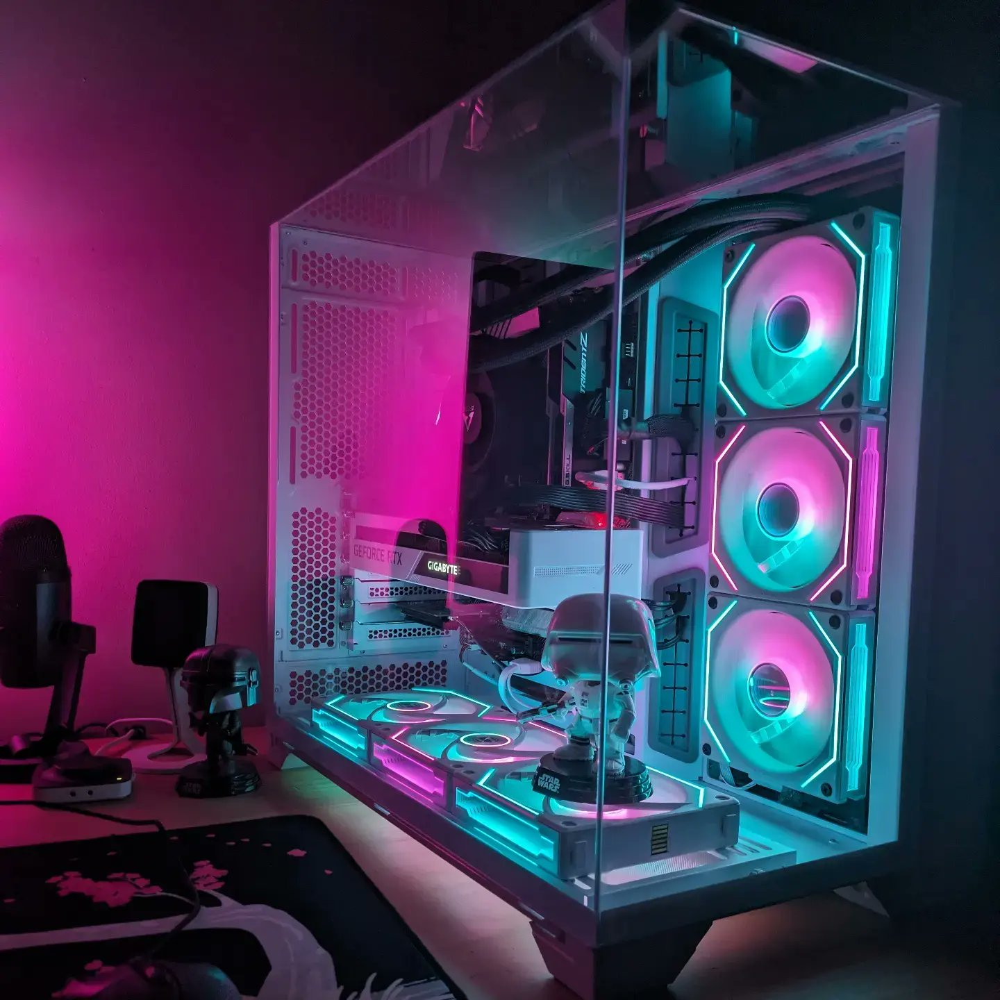

Network Pro
TestOut
Certified IT technician · PC builds · phone repair
Hi, I’m Jacob — a CompTIA-, Microsoft-, and TestOut-certified IT technician. I build custom computers, repair phones, and diagnose the tech problems that leave you stuck — with friendly service, explained in plain English.

About
I’m an IT technician who genuinely enjoys solving tech problems — the kind of person friends and family call when something won’t connect, won’t print, or won’t turn on. I hold industry certifications across PC support, networking, and security from CompTIA, Microsoft, TestOut, and Certiport.
I’m also a certified Customer Service Specialist, which means you get more than a fix — you get someone who explains things in plain English rather than tech-speak, and treats your time and your gear with respect.
Credentials
Industry-recognized certifications across PC support, networking, and security — earned, not assumed.
TestOut
TestOut
TestOut
Microsoft (98-349)
Microsoft (98-367)
ETA International
CompTIA
Certiport
What I can help with
Backed by industry certifications and plenty of hands-on experience. Here’s how I can help.
Tell me your budget and what you need it for — gaming, work, everyday — and I’ll spec and assemble a computer that’s right for you.
Cracked screens, tired batteries, and common phone problems fixed — parts sourced for your specific device.
Not sure what’s wrong? I’ll figure out the problem and tell you exactly what it needs — no guesswork, no pressure. Prefer I fix it too? I can source and fit the part for you.
⏱ Most parts arrive in a few days; rarer parts up to ~2 weeks.
Portfolio
A look at some recent work — with more to come as I take on new builds and repairs.
A white-themed RGB build with tempered glass, an RTX graphics card, and a triple-fan cooling setup — cable-managed and stress-tested.
Replaced a cracked screen and swollen battery, bringing a phone back to full working order.
Tracked a computer that wouldn’t start down to the exact faulty part, and laid out the fix.
Questions
Both work. Phone repairs and diagnostics are usually easiest as a drop-off, while for PC builds and setup I can arrange whatever’s most convenient. I’m based in Grand Rapids, MI and serve the surrounding area.
Diagnostics are often same-day. Phone screen and battery repairs are typically done within a day of the part arriving. Custom builds depend on parts — most components show up within a few days, with rarer parts taking up to about two weeks.
Every job is a little different, so I’ll always give you a clear quote up front before any work starts — no surprises. We diagnose first, then you decide whether to go ahead.
Absolutely. If something I built or repaired has an issue related to the work I did, get in touch and I’ll make it right.
Cash and common digital payment methods. We’ll sort out the details when you book.